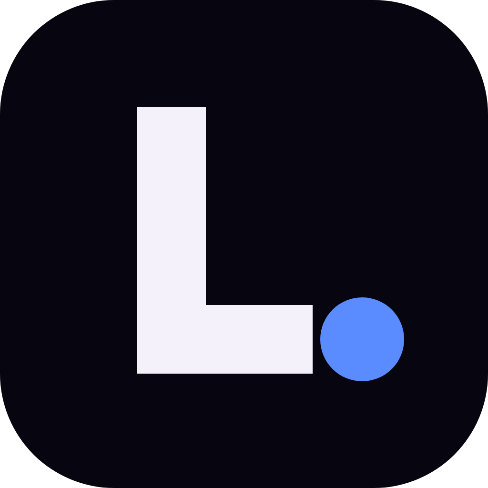
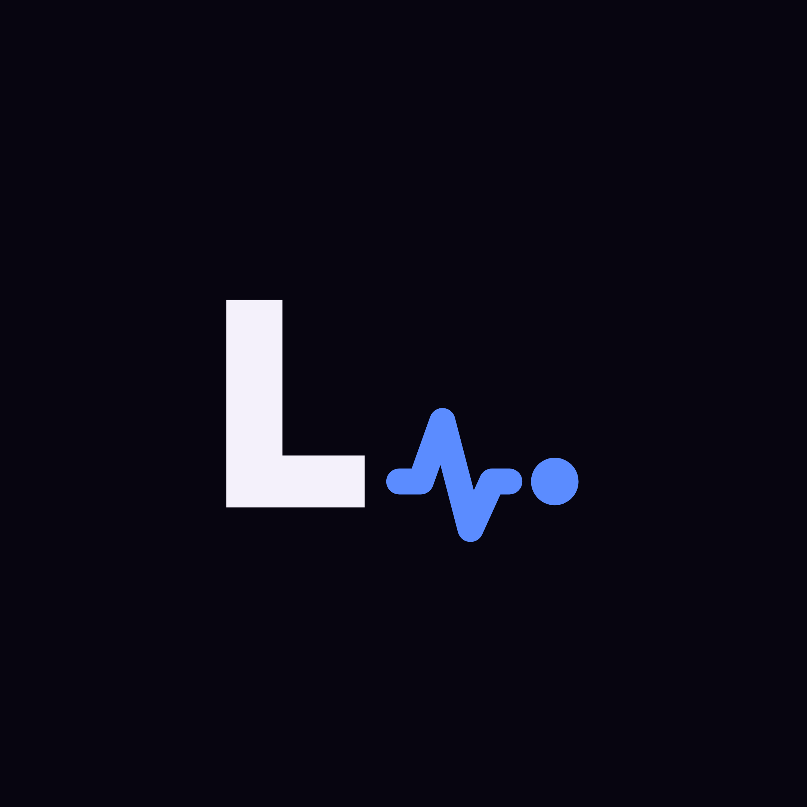

Kropka z nagłówka strony okazała się końcem linii pulsu. Puls mówi to samo, co obietnica marki: coś jest pod stałą obserwacją i działa.



Pole ochronne równe wysokości kropki, liczone od skrajnych punktów znaku.
Minimum 120 px szerokości logotypu; niżej sam znak, poniżej 24 px — sygnet.
Puls zawsze w akcencie, nawet gdy napis jest jednokolorowy.
Nie używamy #2969f1 — to kolor Moje RODO, przez który obie marki wyglądały jak jedna.
Nie odsuwamy kropki od pulsu — ten odstęp jest częścią rysunku.
Nazwa to „Lajf", nigdy „LAJF" ani „Lajf.eu" w roli logotypu.